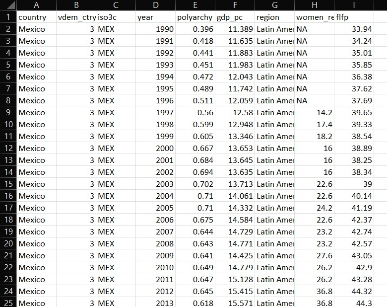

Understanding Data
Sources and Structure
February 7, 2025
Preliminaries
Where Does Data Come From?
Thoughts? üòé üí≠
- Your boss or a client sends you a file
- Survey data collected by you or someone else
- You can download it from a website
- You can scrape it from a website
- A data package (e.g.
unvotes) - You can access it through an API
Getting Started with Data
- Tabular data is data that is organized into rows and columns
- a.k.a. rectangular data
- A data frame is a special kind of tabular data used in data science
- A variable is something you can measure
- An observation is a single unit or case in your data set
- The unit of analysis is the level at which you are measuring
- In a cross-section: country, state, county, city, individual, etc.
- In a time-series: year, month, day, etc.
Adjectives for Your Data
The Concept of “Tidy Data”
- Each column represents a single variable
- Each row represents a single observation
- Each cell represents a single value
Tidy Data Example
What are Clean Data?
- Column names are easy to work with and are not duplicated
- Missing values have been dealt with
- There are no repeated observations or columns
- There are no blank observations or columns
- The data are in the proper format, for example dates should be formatted as dates
Messy Data Example

Which of These is Likely Tidy/Clean?
- Your boss or a client sends you a file
- Survey data collected by you or someone else
- You can download it from a website
- You can scrape it from a website
- A curated collection (e.g.
unvotes) - You can access it through an API
How Do We Get Tidy/Clean Data?
- Get lucky and find it
- Wrangle it ourselves
- Use a package where it has been wrangled for us
- Download via an API
Reading Data
Read Data into R
- Use
read_csv()function fromreadrpackage readrpackage is part of thetidyverse- Can do more with it than base R functions
R Code Review
<-is the assignment operator- Use it to assign values to objects
#is the comment operator- Use it to comment out code or add comments
- Different function than in markdown text
- To call a library, use
library()and name of library- name of library does not have to be in quotes, e.g.
library(readr) - only when you install it, e.g.
install.packages("readr")
- name of library does not have to be in quotes, e.g.
Read Data into R
Viewing the Data in R
Use glimpse() to see the columns and data types:
# load libraries
library(readr)
library(dplyr)
dem_summary <- read_csv("data/dem_summary.csv")
glimpse(dem_summary)Rows: 6
Columns: 5
$ region <chr> "The West", "Latin America", "Eastern Europe", "Asia", "Afri…
$ polyarchy <dbl> 0.8709230, 0.6371358, 0.5387451, 0.4076602, 0.3934166, 0.245…
$ gdp_pc <dbl> 37.913054, 9.610284, 12.176554, 9.746391, 4.410484, 21.134319
$ flfp <dbl> 52.99082, 48.12645, 50.45894, 50.32171, 56.69530, 26.57872
$ women_rep <dbl> 28.12921, 21.32548, 17.99728, 14.45225, 17.44296, 10.21568Or use View() or click on the name of the object in your Environment tab to see the data in a spreadsheet:
Try It Yourself!
- Open the CSV file to see what it looks like
- Then use this code to read it into R and view it
05:00
Write a New CSV File
Now try writing the same data to a file with a different name
02:00
Excel Files
Read in Excel File
Try With Excel
- Read in the Excel file
- Follow same steps as with CSV file
- use
read_excel()to read in the data - install and experiment with writexl
- use
05:00
Google Sheets
Import Data from Google Sheets
- Can use
googlesheets4 - Have a look at these Gapminder data
- Use
gs4_deauth()to authenticate - Then use
read_sheet()to read in the data
Example Code
Or…
Or…
Try It Yourself!
- Use the code above to read in the data
- Try reading in Gapminder data for a different country
05:00
Find Your Own Data
- Visit kaggle.com
- Find a dataset you like
- Download it as a CSV
- Upload to your Posit Cloud project
- Read it into R
- Explore with
glimpse()andView()
05:00